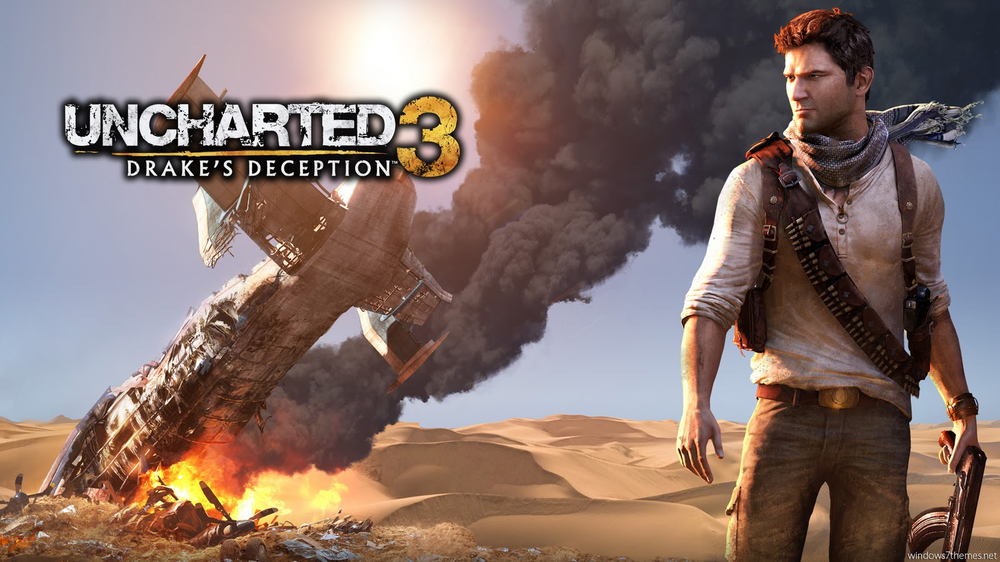

Uncharted: El tesoro de Drake
El cazador de tesoros, Nathan Drake, recupera el ataúd de su ancestro
Sir Francis Drake. Con la intención de filmar su documental, es ayudado por la periodista
Elena Fisher. Ambos encuentran ell diario de Sir Francis con la ubicación de la ciudad
llamada “El Dorado”.
Victor Sullivan rescata a ambos de una banda de piratas. Ambos camaradas abandonan a Elena
y se dirigen al Aazonas, donde descubren que El Dorado no es una ciudad, sino una gran estatua de oro.
Encuentran una hoja perdida del diario de Drake que indica la nueva ubicación de El Dorado. No obstante,
son acorralados por Roman, Navarro y Eddy, cazadores rivales que roban la hoja pérdida y
disparan a “Sully”. En su escape, Nate se encuentra con Elena y juntos huyen a las islas del
Pacífico en busca de la estatua.
Tras separarse, Nate va al fuerte donde localiza un mensaje de Sir Francis que lo dirige hacia la
torre, pero es capturado por Eddy quien le exige colaboración para hallar el tesoro.
Elena ayuda a Nate a escapar de prisión. Llegan a una ciudad abandonada y descubren que la estatua
fue trasladada a los interiores de la isla. Elena descubre que “Sully” está vivo y que trabaja con Navarro.
Rescatan a “Sully” quien les explica que sobrevivió gracias a que el Diario de Drake amortiguó la bala
y fue obligado a trabajar con Navarro, pero dándole pistas falsas.
Nate y compañía encuentran un laberinto que los conduce hasta el cadáver de Sir Francis. Asume que su
antepasado murió buscando el tesoro, decepcionado tira su anillo y se aleja.
Luego se encuentran con un aterrado Eddy quien huye de unas criaturas mutantes llamadas “Los Descendientes”.
Eddy muere y Nate es rescatado por Elena.
Al intentar escapar ambos llegan a un cuarto de una abandonada base submarina Nazi. En este lugar Nate se
traslada por las tuberías con la intención de devolver la electricidad. Nate descubre que los alemanes
intentaron encontrar la estatua durante la Segunda Guerra Mundial pero descubrieron la maldición de la isla.
Las criaturas resultaron ser los descendientes mutados de la primera expedición española, y al percatarse de esto
, Sir Francis decidió mantener la estatua en la isla, muriendo en el proceso.
Nate y Sully deciden rescatar a Elena de las manos de Roman y Navarro, pero son atacados por los mutantes.
Roman convencido por Navarro abre la estatua y el fuerte gas lo convierte en una criatura más.
Navarro le dispara en la cabeza y huye con la estatua en un helicóptero, pero Nate logra alcanzarlo.
Elena neutraliza al piloto y se estrellan en un barco.
Nate derrota a Navarro y rescata a Elena. Sumerge el helicóptero llevando consigo la estatua y a Roman.
Luego “Sully” aparece en un pequeño bote lleno de tesoros. Elena le devuelve su anillo a Drake y le recuerda
que le debe una historia. Nate le asegura que cumplirá su promesa.
Uncharted 2: El reino de los ladrones

Chloe Frazer y Harry Flynn, se reúnen con Nate para infiltrarse en un museo turco y recuperar
una lámpara que una vez perteneció a Marco Polo.
Chloe visita a Nate y lo convence que una vez repartido el tesoro se escape con ella. Nathan y Flynn descubren otro mapa.
La nueva información detalla que la tripulación de Marco Polo naufragó en Burneo, junto a la piedra Cintanami de Shambhala.
Nate es traicionado por Flynn y puesto en prisión por los guardias del museo.
Tres meses después, Chloe junto a “Sully” sacan a Nate de prisión y le revelan que el cliente de Flynn es
Zoran Lazarevic, un ex operativo de inteligencia soviético, convertido ahora en un jefe militar en busca de la piedra.
En Burneo, Nate descubre que la piedra jamás salió de Shambhala. Dentro de un templo descubre que debe ir a Nepal.
No obstante, son detenidos por Lazarevic. Luego de escapar, “Sully” decide no continuar con la búsqueda,
dejando solos a Nate y Chloe.
En Nepal, Nate cruza camino con Elena y su reportero Jeff. Los cuatro llegan hasta el templo y descubren la locación
exacta de Shambhala en los Himalayas. Jeff recibe un disparo y, a pesar del esfuerzo de Nate, es asesinado por Lazarevic.
Para evitar ser descubierta, Chloe finge estar de lado de Flynn. Nate y Elena logran escapar.
Elena ayuda a Nate a alcanzar el tren de Lazarevic. Dentro, Nathan pelea hasta encontrar a Chloe, pero ella se rehúsa
a huir con él luego que pusiera en riesgo la operación por intentar ayudar a Elena y a Jeff.
Flynn aparece y dispara a Nate en el abdomen ante el asombro de Chloe. Acorralado, Nate decide causar una explosión que
logra descarrilar el tren y dejarlo colgando en un precipicio.
Tras escapar del tren y desmayare, un lugareño llamado Tenzin lo encuentra y lo lleva a su villa. Días después, Nate
despierta y se reúne con Elena.
Karl Schafer, un antiguo explorador alemán le da la bienvenida a Nate y lo motiva a seguir con la búsqueda. Junto a Tenzin
encuentran la expedición fallida de Schafer y descubren que es un antiguo miembro de la SS que asesinó a sus hombres para
proteger al mundo del poder de la piedra.
Nate y Tenzin se encuentran con unos monstruos y deciden regresar a la villa que se encuentra atacada por los hombres
de Lazarevic. Elena y Drake van en busca de Schafer quien fue secuestrado, pero que lamentablemente muere a causa de graves heridas.
Nate, Elena y Chloe descubren el pasaje secreto a Shambhala bajo el monasterio, pero son emboscados por Lazarevic.
Nate es obligado a abrir la puerta, cuando de pronto los monstruos aparecen.Lazarevic descubre que en realidad
son guardianes disfrazados.
En Shambhala, el grupo descubre que la piedra Cintanami, es un ámbar gigante de resina azul incrustada en el
prehistórico árbol de la vida y su savia confiere poderes a quienes la consuman.
Un herido Flynn aparece y decide matarse haciendo estallar una granada, dejando muy herida a Elena en el proceso.
Nate va en busca de Lazarevic quien bebe la savia y obtiene invulnerabilidad. No obstante Drake logra vencerlo
utilizando las cualidades explosivas de la resina, dejándolo herido los guardianes lo asesinan.
Nate, junto a Elena y Chloe logran escapar mientras la ciudad se derrumba a causa de las explosiones. De regreso en
la villa, “Sully” se reúne con el grupo. Chloe se despide de Drake no sin antes decirle que se arme de valor y le diga
a Elena que la ama. Mientras “Sully” decide ir detrás de Chloe, deja solos a Nate y a Elena, que se abrazan en el atardecer.
Uncharted 3: La traición de Drake
Nate y “Sully” se reúnen en un bar con un hombre llamado Talbot interesado en comprar el anillo de Sir
Francis Drake. Talbot es acusado de estafa y una pelea inicia. Ambos socios son reducidos por Charlie Cutter. Katherine
Marlow, empleadora de Talbot,, aparece y le arrebata el anillo a Drake. Luego ambos son disparados y dejados por muertos.
20 años atrás un Nate de 15 años busca del anillo de Sir Francis en un museo en Cartagena, Colombia. Conoce a “Sully”
quien lo acoge bajo su custodia luego de ayudarlo a escapar de los hombres de Marlow.
En el presente, se revela que Cutter es aliado de Nate y que todo había sido un engaño para seguir el rastro de Marlowe.
Con la ayuda de Chloe Frazer, siguen el rastro y encuentran un mapa que les muestre el viaje secreto de Francis Drake,
en busca de la ciudad perdida de Ubar.
En Francia descubren la mitad de un amuleto, pero son emboscados por Talbot. Pequeñas arañas carnívoras aparecen y amenazan
con matar a todos, Nate y Sully logran escapar mientras los hombres de Talbot incendian la mansión por completo.
En Syria se reúnen con Chloe y Cutter. El grupo encuentra la otra parte del amuleto pero los hombres de Talbot aparecen
y en su intento de escapar Cutter se rompe una pierna y queda al cuidado de Chloe.
En Yemen, Nate busca la ayuda de su esposa Elena Fisher, de la cual se encuentra separado. Ambos encuentran una tumba
subterránea con la locación de la ciudad perdida. Nate recibe el disparo de un dardo con un fuerte alucinógeno, despierta
y se percata que está junto a Talbot y Marlowe, quien lo amenaza con revelarle al mundo la locación de Ubar.
Drake es capturado por piratas a cargo de Marlowe. Nate logra escapar pero una explosión hunde el barco. De vuelta en Yemen
, Nate se reúne con Elena quien le informa que Sully fue capturado por los hombres de Marlowe, y llevado en un convoy
hacia el desierto.
Drake decide seguirlos infiltrándose en un avión, pero que es destruido tras una explosión en pleno vuelo. Por suerte
, llega a salvo a tierra luego de abrir el paracaídas de una de las tarimas de cargo.
Tras vagar por el desierto, Nate es rescatado por unos hombres a caballo dirigidos por Salim. En su campamento, Salim
cuenta que la ciudad de Ubar fue maldecida hace miles de años cuando el Rey Solomon encarceló a un genio malvado
dentro de un recipiente de metal.
Salim decide ayudar a Nate y logran destruir el convoy y rescatar a Sully. Ambos llegan a Ubar luego que una tormenta
de arena los separara de Salim.
Tras beber agua de una fuente, Talbot aparece junto a Marlowe y disparan a Sully, matándolo. Lleno de rabia, Nate sale
a perseguirlos, pero es arrinconado por los hombres de Marlowe que parecen haber sido poseídos por el genio.
Nate logra salir del transe y descubrir que Sully está vivo.
Al parecer cuando el Rey Solomon puso la vasija de metal dentro de las profundidades del pozo, contaminó el agua
con un poderoso alucinógeno, el mismo que afectó a Drake. Nate se percata que Sir Francis habría decidido no
seguir con el viaje por temor a la vasija.
Nate logra detener a Marlowe que se encontraba recuperando la vasija, simultáneamente causa una explosión que
amenaza con destruir la ciudad. El piso cede y Marlowe termina cayendo a su muerte. Sully y Nate pelean con talbot
, quien recibe un disparo y también cae.
Salim llega y logra rescatarlos. De vuelta en el aeropuerto de Yemen, Sully le regresa a Nate su anillo de bodas
, que secretamente guardó luego de la separación con Elena. Nathan no pierde tiempo y le promete a ella un nuevo comienzo.